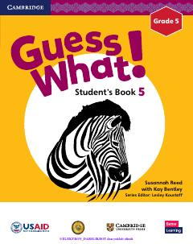

5I5-sinf o'quvchilari uchun mo'ljallangan zamonaviy ingliz tili darsligi.
Mazkur darslik O'zbekiston Respublikasi Xalq ta'limi vazirligi va USAID hamkorligida tayyorlangan bo'lib, 5-sinf o'quvchilari uchun ingliz tilini qiziqarli va samarali o'rganishga mo'ljallangan. Kitobda turli mavzular, grammatik qoidalar, lug'at boyligini oshiruvchi mashqlar va madaniyatlararo muloqotga oid matnlar o'rin olgan.